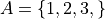
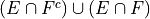

Set Theory#
Instructions
Start a fresh page in your classwork notebook. Write today’s date in the margin of the page. Clearly label and solve each of the following. Show your work and circle the anwer.
For the following problems, you are given,




Where S is the universal set and A, B, C and D are subsets of S.
Set Operations Write the elements of each of the following sets in List Notation,
Cardinality Answer each of the following problems,


Spoiler Alert Why does part d equal part a?
De Morgan’s Laws. Write the elements of each of the following sets in List Notation. Use the answers from #1 where appriopriate.

Based on the answers to part a - d, what conclusions can you draw about the relationship that exists between the operations of complementation, intersection and union?
Absorption Laws Write the elements of each of the following sets in List Notation. Use the answers from #1 where appriopriate.


Based on the answers to part a - b, what conclusions can you draw about the relationship that exists between the operations of intersection and union?
Distributive Laws Write the elements of each of the following sets in List Notation. User the answers from #1 where appriopriate.

Based on the answers to part a - d, what conclusions can you draw about the relationship that exists between the operations of intersection and union?
Counting Laws. Find the cardinality of each of the following sets.
Equivalence and Equality. Determine whether each of the following propositions is true or false.
Subsets Determine whether each of the following propositions is true or false.
Symbolic Expressions Write a symbolic proposition that expresses the results of #8 in the form of an “if…then…” conditional statement.


Tip
Don’t forget to quantify the proposition.
Proofs Suppose you are given two sets E and F. Using the properties of sets discussed in class and the ones covered in this classwork, derive an identity for each of the following expressions,


Hint
Use the distributive laws from #5 and then use the Complement Theorems <complement_theorems>